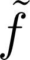

ルジャンドル変換の一般論を述べよう。物理では、
という状況がよくあるのだが、この変数の変換をうっかりとやると、その関数から得られる情報が失われてしまったり、変える前と変えた後で方程式の形が（意図せぬ形に）変化してしまったりする。そうならないように関数の形を調整しつつ独立変数を変える方法を「ルジャンドル変換(Legendre transfomation)」と言う。
aを定数として
f(x)=(x-a)2
という関数を考えよう。今はx→fという関数になっているわけだが、新しい変数としてfのxによる微分
px=（∂ f／ ∂ x）=2(x-a)
を取りたいとする。逆に、x-a=（px／ 2）である。pxを変数としてfを表現すると、
f=（(px)2／ 4）
となる。結果はaによらない式になったが、ここで「簡単な式になった」と喜んではいけない。「aという情報を失ってしまった」と嘆くべき状況である。x→fという対応関係の中にはaの情報があるが、px→fという対応関係の中にはaがどこにも入っていない。つまり、「px→fという対応関係だけを知っている人」は「x→fという対応関係だけを知っている人」より情報が少ない（たとえばpx=2(x-a)という式を出せるのは、後者のみ）。
なぜ情報が消えてしまったかを考えよう。以下に、x,fのグラフとpx,fのグラフを描く。
上の左側のグラフはaを変化させた時のf=(x-a)2を描いたものだ。この時表示されている接線の傾きがpxである。
右側のグラフはpxとfの関係で、式で表現すればf=（(px)2／ 4）である。その対応関係は、aをずらしても（グラフを平行移動しても変わりがない（スライダーでaの値を変えることができるので、変えてみても右のグラフが変わらないことを実感せよ）。
たとえば、
という関係（グラフの下のボタンを押すとグラフ上に表示できる）は、aをどう変えても同じである。ゆえに「x→fという関数関係」は「px→fという関数関係」に移行させることができない。必ず情報が失われる。そこでfではない新しい関数を作って、情報が正しく移行されるようにしなくてはいけない。
ではどんなを持ってくれば「x→fという関数関係」の持っている情報を全て「px\toという関数関係」に移行させることができるのか？---その答えがルジャンドル変換である。
この二つの問題に対する対応策を述べよう。
(px)=f(x)-xpxで新しい関数を定義する。f=(x-a)2の場合のの意味をグラフで表現したのが次の図である。
pxはグラフの接線の傾きであり、-xpxという量はすなわち、接線をf軸まで伸ばしていった時のf座標の変化である。スライダでa,xを変えてみて欲しい。aの違いがの違いに反映することがわかるだろう。
前節の例について実際に計算してみると、
= (x-a)2- xpx=（(px)2／ 4）- (（(px)／ 2）+a)px = -（(px)2／ 4）-apx
となる。情報を失っていない変換なので「元に戻す」こともできる。
x=- （∂ ／ ∂ px）=（px／ 2）+aでxを定義してf= + xpxというのが逆変換である。
まとめると、以下のとおりとなる。
関数f(x)、すなわちx→fという対応関係の入力変数をxではなくpx=（∂ f／ ∂ x）に変えたい時は
(px)=f(x)-xpxと定義すると、元の対応関係が持っていた情報を失うことなく新しい対応関係px→を作ることができる。
U→Fのルジャンドル変換のグラフを見よう。
理想気体の内部エネルギーのS,V,Nを独立変数とした表現は
U[S,V,N]=cNR×（T*(v*N)（1／ c）／ V（1／ c））exp(（S／ cNR）-1)+Nuだった。一方ヘルムホルツ自由エネルギーFのT,V,Nを独立変数とした表現は
F[T;V,N]=-NRT ×log（T^cV／ (T*)^c v*N）)+Nu（∂ U／ ∂ S）=T,（∂ F／∂ T）=-Sが成立していることに注意。
であり、FをS,V,Nで書くと
F(S,V,N)=NR（T*(v*N)（1／ c）／ V（1／ c））(1-（S／ cNR）)exp(（S／ cNR）-1)+Nuとなる
（以上二つのグラフは薄い線で表現している）。